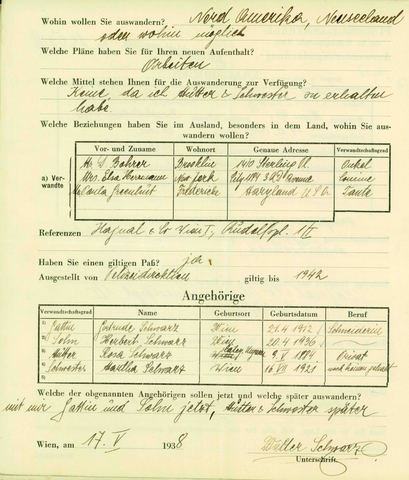

Rosi Glas
1882–1942
Life events
| Born | 15 Mar 1882 · Poland Map |
|---|---|
| Married | 14 Feb 1909 · Philipp Schwarz · Brigittenauer Tempel, 1200 Kluckygasse 11, Vienna, Austria Map  |
| Nazi Persecution | 17 May 1938 · 1190 Boschstrasse 49, Vienna, Austria Map · Address per Nazi records |
| Deportation | 6 Jun 1942 · Sobibor Death camp, Sobibór, Lubelskie, Poland Map · to Sobibor Death camp. ID: 38290 |
| Lived | 13 Jun 1942 · 1200 Klosterneuburgerstrasse 50, Vienna, Austria Map |
| Memorialized | 15 Jun 1942 · Zentralfriedhof Tor IV, 1110 Simmeringer Hauptstrasse 246, Vienna, Austria Map · Memorialized on husband's grave. ZFH Tor IV, Group 10A, Row: 8, Grave 12 |
| Died | 15 Jun 1942 · Sobibor Death camp, Sobibór, Lubelskie, Poland Map · Murdered by Nazis in the Holocaust |
Family
Rosi Glas1882–1942

Philipp Schwarz1884–1926
Photos
Philipp Schwarz
Rosi Glas

Philipp Schwarz
Rosi Glas

Rosi Glas
Rosi Glas